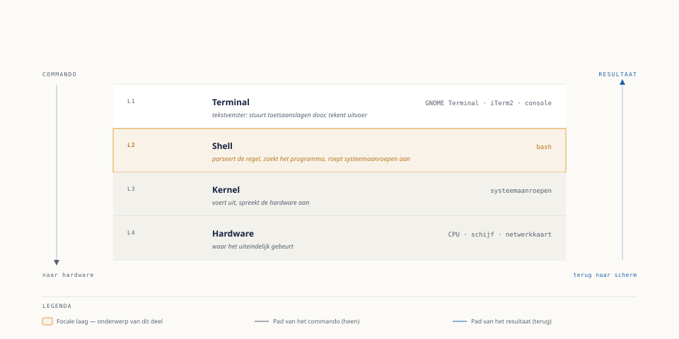

Vier lagen, van vinger tot hardware
⏱ 10 minWanneer Milan ls -l intypt en op Enter drukt, ervaart hij dat als één handeling. Onder de motorkap zijn het minstens vier lagen die na elkaar iets doen. Fenna tekent dit voor hem op een whiteboard tijdens hun eerste een-op-een over de shell.

Terminal (of terminalemulator). Het venster waarin u typt en waarin tekst verschijnt. De terminal zelf begrijpt geen commando's — hij is niet meer dan een tekstvenster dat toetsaanslagen doorstuurt en tekens tekent. Voorbeelden: GNOME Terminal, iTerm2, Windows Terminal, of de virtuele console die verschijnt als u op een Raspberry Pi zonder desktopomgeving inlogt.
Shell. Het programma dat de tekst die u typt interpreteert als commando, syntax controleert, en de opdracht uitvoert of doorgeeft. De shell is het onderwerp van dit deel. Op Ubuntu Server is dat standaard bash (Bourne Again SHell).
Kernel. De kern van het besturingssysteem. De kernel praat niet rechtstreeks met u; programma's — waaronder de shell — vragen via systeemaanroepen (system calls) aan de kernel om dingen te doen: een bestand lezen, een proces starten, geheugen toewijzen.
Hardware. Waar het uiteindelijk gebeurt: de schijf die gelezen wordt, de CPU die rekent, het netwerkkaartje dat een pakket verstuurt.
Het punt van dit onderscheid is niet academisch. Als een commando een foutmelding geeft, helpt het te weten in welke laag het misgaat: "command not found" is een shell-fout (het commando bestaat niet of staat niet in het zoekpad), "permission denied" is meestal een kernel-beslissing op basis van bestandsrechten (deel 11), en een bevroren terminal kan op elke laag liggen — van een kapotte SSH-verbinding tot een proces dat wacht op hardware die niet reageert.
Uit Werkboek deel 7, Opdracht 7.1
1Wat gebeurt er in elke laag (terminal, shell, kernel, hardware) bij het commando cat /etc/os-release?Toon antwoord
cat als commando en /etc/os-release als argument, zoekt cat op via $PATH, start het als proces. Kernel: ontvangt van het proces cat de systeemaanroep om het bestand te openen en te lezen, controleert leesrechten, levert de bytes. Hardware: de daadwerkelijke opslag (meestal cache in RAM, mogelijk van schijf/SD-kaart) waar de inhoud vandaan komt.